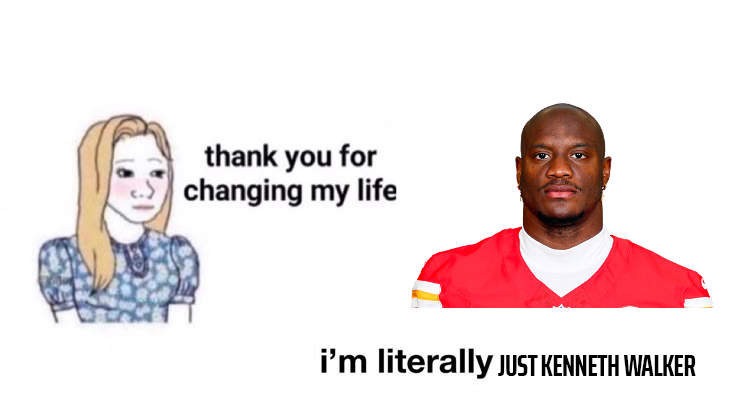

Red Vines · 2026 · Week 5
Week 5 Power Rankings
More of the same but some surprises here and there
-
1–

Justin Beer Loyalist
Mr. Needlemouse is carrying Justin Beer in a way Mr. Harbaugh wishes he could
Overall top performers- RB1Jahmyr Gibbs140.2
- WR5Davante Adams81.6
- TE1Trey McBride69.8
Weekly top performers- RB1Jahmyr Gibbs35.2
- WR4Malik Nabers23.6
- WR10Davante Adams19.6
-
2–

Karans Sportsbook
Polymarket has 20-1 odds on Karans Sportsbook taking home the championship 👀 (Disclaimer: This is just a joke do not actually bet on this)
Overall top performers- RB8James Cook85.8
- RB11Chuba Hubbard74.0
- K2Will Reichard68.0
Weekly top performers- QB1Drake Maye39.5
- RB4James Cook22.3
- K4Will Reichard16.0
-
3▲1

Baltimore Avians
Jesse Minter you have changed the lives of millions
Overall top performers- RB2Bijan Robinson112.2
- QB4Joe Burrow104.2
- RB9Jaylen Warren83.5
Weekly top performers- RB2Jaylen Warren33.8
- QB9Joe Burrow24.6
- K2Spencer Shrader21.0
-
4▲1
Shivxn

Overall top performers- RB4Kenneth Walker104.1
- WR6Chris Olave79.2
- RB14Bucky Irving71.2
Weekly top performers- QB2Jayden Daniels32.3
- RB3Bucky Irving30.5
- WR2Puka Nacua29.2
-
5▼2

Amver Alert🚨
The streets will remember the championship run for Amver from Week 1 - Week 3
Overall top performers- QB1Josh Allen146.5
- WR4Amon-Ra St. Brown85.7
- RB13Ashton Jeanty73.6
Weekly top performers- QB3Josh Allen31.5
- TE4Tyler Warren17.9
- WR11Jameson Williams17.7
-
6▲1

6 7
Purdy might win MVP but sadly may not be enough to get past 6th or 7th in this league
Overall top performers- QB2Brock Purdy118.6
- RB3Derrick Henry107.8
- RB10Christian McCaffrey81.8
Weekly top performers- WR6Mike Evans22.8
- RB5Derrick Henry20.5
- RB6Braelon Allen18.1
-
7▲1
NShah19
Lamar letting down his team once again x2
Overall top performers- RB5Kyren Williams95.8
- QB19Lamar Jackson80.1
- WR10Ja'Marr Chase66.4
Weekly top performers- QB4Jared Goff28.9
- WR13Ja'Marr Chase16.7
- RB8Kyren Williams16.6
-
8▲2

Braelon Allen
Braelon Allen's redemption arc may be done and dusted but this Christian Watson resurgence might be even more impressive
Overall top performers- WR2Christian Watson96.4
- RB6Jonathan Taylor90.9
- QB16Patrick Mahomes85.6
Weekly top performers- WR1Christian Watson29.3
- QB5Matthew Stafford27.3
- DEF9Minnesota Vikings D/ST11.0
-
9▼3

I’m Whipped by Bezos
And the whipping has returned sadly
Overall top performers- QB5Dak Prescott96.8
- WR3CeeDee Lamb95.6
- WR7Garrett Wilson70.9
Weekly top performers- WR9Garrett Wilson19.9
- TE5Sam LaPorta17.3
- QB17Dak Prescott14.6
-
10▼1

superdiddy
Yeah it might just be a lost cause sadly
Overall top performers- RB7Javonte Williams87.5
- WR9Zay Flowers68.8
- WR20Justin Jefferson54.2
Weekly top performers- K3Ka'imi Fairbairn17.0
- WR15Justin Jefferson15.8
- RB19Javonte Williams13.2
-
11▲1
yrkpapi
Hold on now... 👀
Overall top performers- WR8Parker Washington70.5
- TE2Isaiah Likely68.9
- WR19George Pickens55.0
Weekly top performers- WR3Parker Washington27.4
- TE1Isaiah Likely26.9
- WR5George Pickens23.5
-
12▼1

Ankitty
Overall top performers- WR1Jaxon Smith-Njigba121.0
- QB17Jalen Hurts83.0
- TE5Brock Bowers59.2
Weekly top performers- WR8Jaxon Smith-Njigba20.3
- TE3Brock Bowers19.0
- DEF6Denver Broncos D/ST15.0